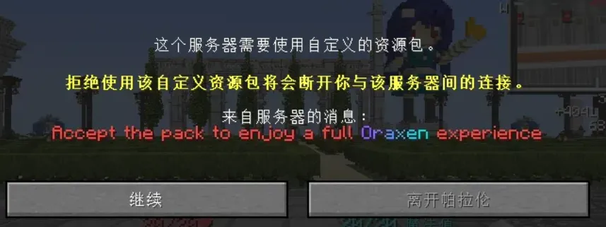

Loading header...
oraxen资源包插件
oraxen资源包插件为BiliCraft丰富的自定义物品提供了外观支持。
在初次进入服务器，服务器会要求下载oraxen资源包，否则不予进入服务器。这是为了让玩家有统一的体验。

提示下载oraxen
指令一览
没有权限
功能介绍
提供服务器的 部分自定义材质，家具、酿造术系统等功能都依靠这个插件实现自定义物品材质。
BiliCraft是纸糊的（双关，也指BiliCraft运行在Paper端），家具、酿造桶等都是屏障方块+告示牌+纸的组合。
目录